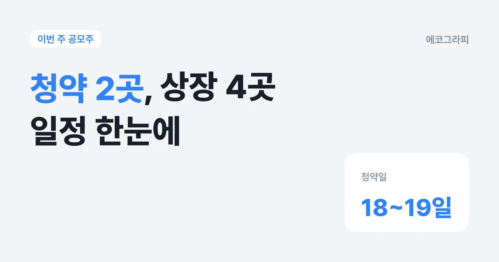
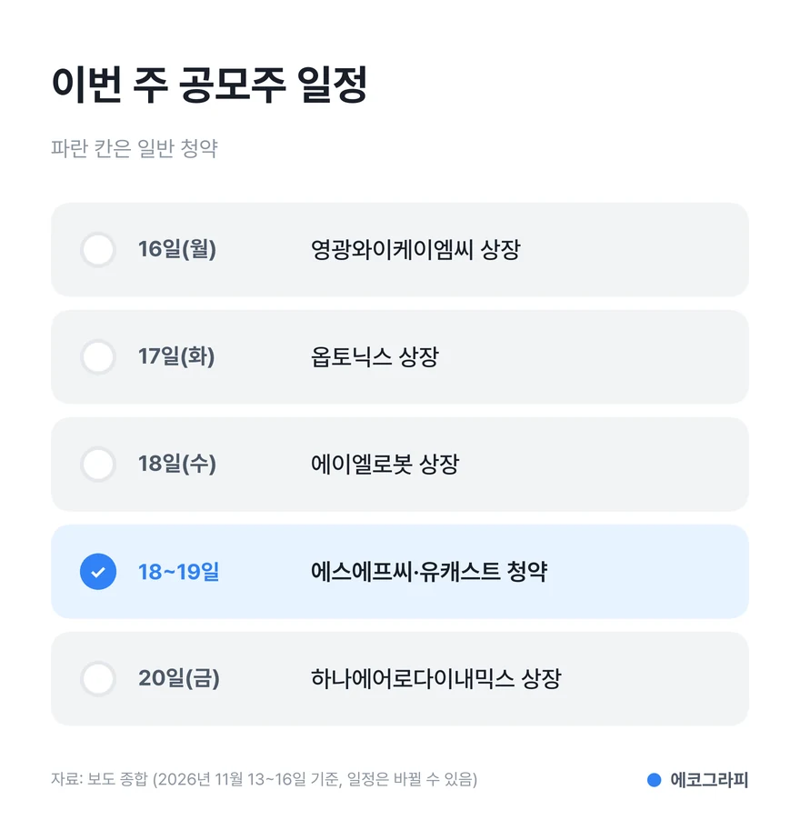
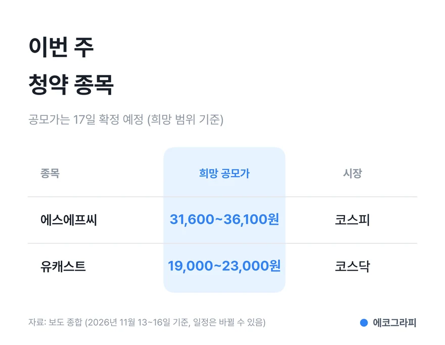
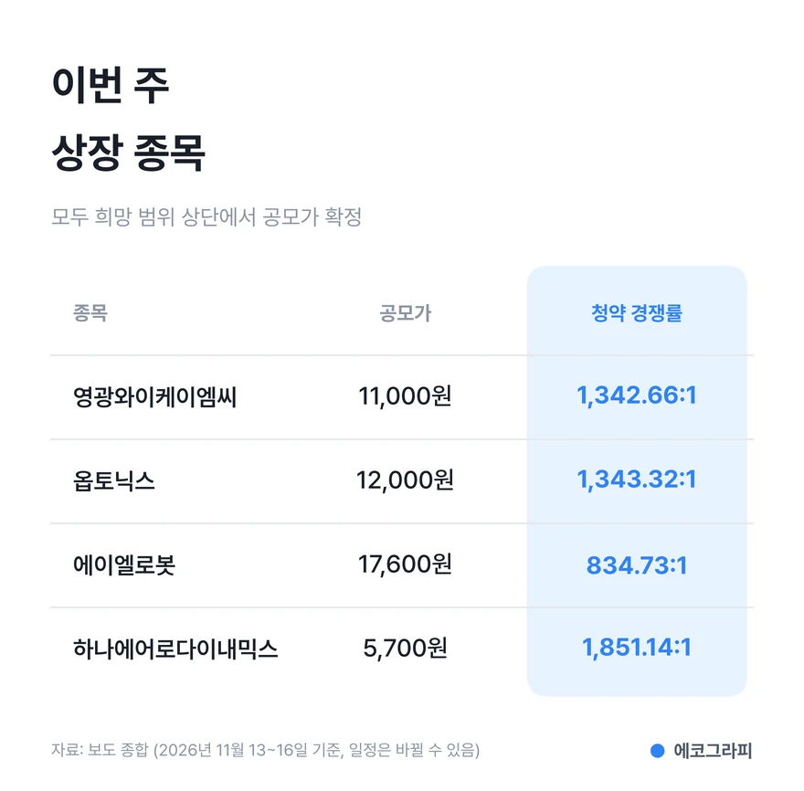
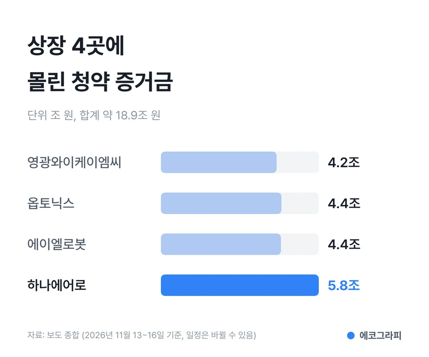

공모주가 처음이라면 공모주 청약 기초 글에서 균등·비례 배정과 증거금 계산법을 먼저 보고 오세요.

확정 공모가는 17일(화)에 나와요. 청약 전에 확정 공모가와 기관 경쟁률, 의무보유확약 비율을 주관사 공지에서 확인하세요.

네 곳 모두 일반 청약 경쟁률이 800대 1을 넘었고, 공모가는 희망 범위 상단에서 정해졌어요. 청약 열기가 뜨거웠던 만큼 상장 첫날 변동성도 클 수 있어요. 상장일엔 주가가 공모가의 60~400% 범위에서 움직일 수 있어요.

다음 주 이후 청약할 종목들의 기관 수요예측도 이번 주에 진행돼요.
이번 주 해볼 것: 청약할 종목이 있다면 주관 증권사 계좌가 있는지, 증거금을 언제까지 넣어야 하는지 미리 확인해 두세요.
대표 주관사 미래에셋증권, 공동 주관사 한국투자증권, 인수회사 삼성증권에서 할 수 있어요. 한 곳에서만 청약할 수 있어요.
보통 청약 마감 2영업일 뒤예요. 19일(목) 마감이면 다음 주 월요일쯤이에요. 증권사 공지를 확인하세요.
꼭 그렇진 않아요. 경쟁률은 관심도일 뿐이고, 유통 물량·시장 분위기에 따라 공모가 아래로 내려가기도 해요.
다른 회사와 합병하려고 만든 회사라 공모가가 보통 2,000원이에요. 합병 대상이 정해지기 전까지는 사업 실체가 없어요.
※ 2026년 11월 기준으로 정리한 글입니다. 공모 일정과 공모가는 증권신고서 정정으로 바뀔 수 있으니 청약 전 주관 증권사 공지와 DART 증권신고서를 꼭 확인하세요. 특정 종목의 청약·매수·매도 권유가 아닙니다.